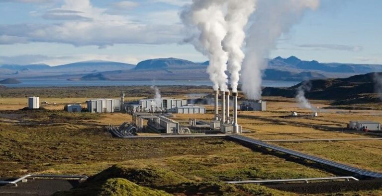
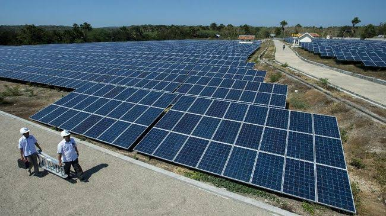
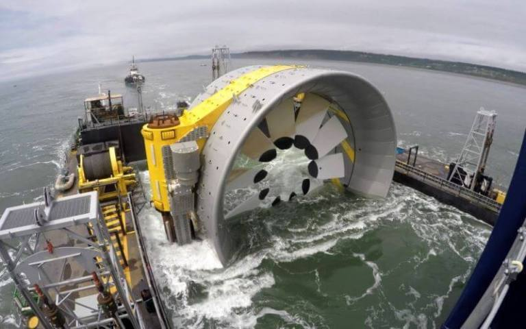

Apa Itu Energi Alternatif?

energi alternatif adalah semua energi yang dapat digunakan untuk menggantikan sumber energi dengan bahan bakar konvensional energi alternatif juga lebih merujuk pada suatu teknologi yang dapat digunakan pada bahan bakar fosil untuk menghasilkan energi yang baru.Adanya energi alternatif tentunya menjadi komponen yang sangat penting bagi kelangsungan hidup manusia di muka bumi ini. ada banyak sekali manfaat yang diberikan oleh energi alternatif sehingga banyak manusia yang mulai menggunakannya.
Sumber Energi Alternatif
• Panas Matahari

Salah satu manfaat besar yang dimiliki oleh matahari adalah ia bisa diubah menjadi energi listrik. Adapun listrik yang dihasilkan dengan menggunakan energi matahari adalah dibantu dengan menggunakan sel surya yang mana di sana terdapat beberapa rangkaian panel unsur semikonduktor atau yang kita sebut dengan panel surya
• Angin

Sumber energi ini berasal dari hembusan angin yang diolah menjadi suatu energi yang besar. di beberapa negara, angin diubah menjadi berbagai jenis energi.Misalnya saja di Belanda, angin ini dibuat menjadi kincir angin yang nantinya digunakan untuk memompa air irigasi ke pertanian. Nah, ukuran dari kincir angin di Belanda juga sangat besar dan tentunya berat.
• Tidal (Gelombang Bawah Laut)

Tidal adalah salah satu sumber energi alternatif yang berasal dari pasang surut air laut,keberadaan energi ini sudah lama ditemukan hanya saja masih sangat asing di telinga masyarakat umum.Salah satu keunggulan tersebut adalah ia memiliki suatu aliran energi yang mudah untuk diprediksi. Tidak hanya itu,energi ini juga lebih hemat serta tidak membutuhkan teknologi yang rumit.